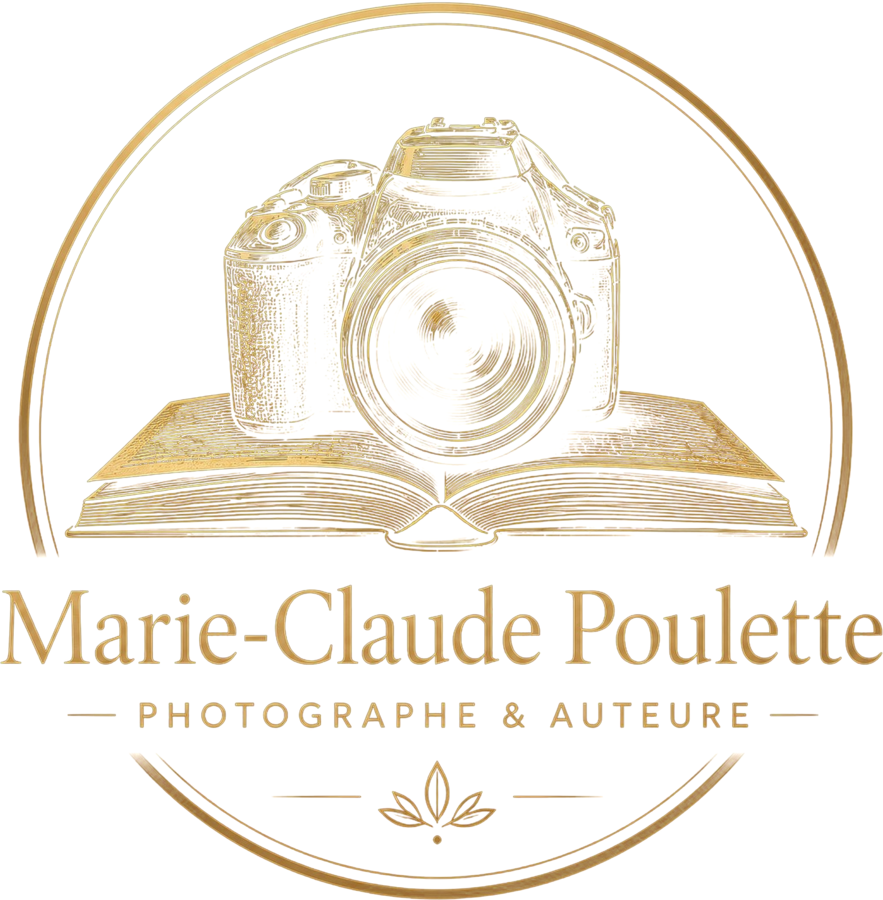
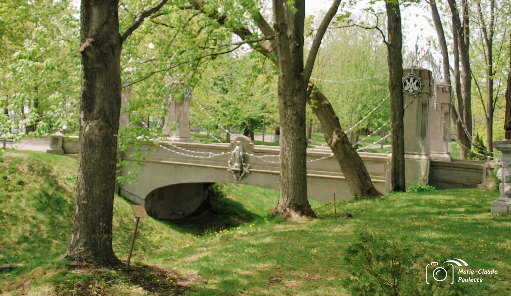

Photographe artistique et auteure en Mauricie, basée à Sainte-Ursule.
Planifier une séance
« Un regard sensible et affirmé pour révéler la beauté des gens. »
Séances de portrait artistique. Formules et tarifs à confirmer*.
Le territoire comme décor et comme sujet. Galerie à compléter*.
Ses projets d'écriture et de livres seront présentés ici*.
Ce site donnerait à vos images l'espace qu'elles méritent : galeries plein écran, séances offertes* et prise de contact en un clic.
Écrivez-moi ou appelez-moi pour planifier une rencontre.
Appeler 819-995-0160 Suivre sur Facebook